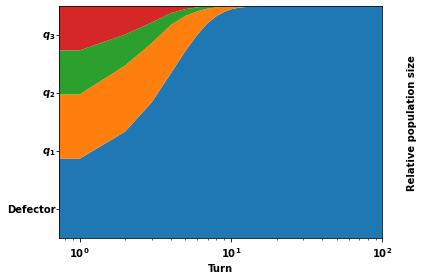
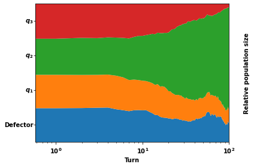

Stability of defection, optimisation of strategies and the limits of memory in the PD.¶
2. Stability of defection¶
import opt_mo
import numpy as np
import sympy as sym
import itertools
import axelrod as axl
import matplotlib.pyplot as plt
/usr/share/miniconda/envs/opt-mo/lib/python3.7/site-packages/sklearn/externals/joblib/__init__.py:15: FutureWarning: sklearn.externals.joblib is deprecated in 0.21 and will be removed in 0.23. Please import this functionality directly from joblib, which can be installed with: pip install joblib. If this warning is raised when loading pickled models, you may need to re-serialize those models with scikit-learn 0.21+. warnings.warn(msg, category=FutureWarning) /usr/share/miniconda/envs/opt-mo/lib/python3.7/site-packages/sklearn/utils/deprecation.py:144: FutureWarning: The sklearn.metrics.scorer module is deprecated in version 0.22 and will be removed in version 0.24. The corresponding classes / functions should instead be imported from sklearn.metrics. Anything that cannot be imported from sklearn.metrics is now part of the private API. warnings.warn(message, FutureWarning)
from fractions import Fraction
from axelrod.action import Action
C, D = Action.C, Action.D
import tqdm
import matplotlib.transforms as transforms
import matplotlib
import warnings; warnings.simplefilter('ignore')
import operator
import functools
sym.init_printing()
from pathlib import Path
tex = Path.cwd().resolve().joinpath('tex')
img_path = Path.cwd().resolve().joinpath('img')
font = {"size": 10, "weight": "bold"}
matplotlib.rc("font", **font)
Analytical check¶
p_1, p_2, p_3, p_4 = sym.symbols("p_1, p_2, p_3, p_4")
q_1, q_2, q_3, q_4 = sym.symbols("q_1, q_2, q_3, q_4")
k_1, k_2, k_3, k_4 = sym.symbols("k_1, k_2, k_3, k_4")
p, q, k = (p_1, p_2, p_3, p_4), (q_1, q_2, q_3, q_4), (k_1, k_2, k_3, k_4)
def get_Q_N_derivative(player, opponent):
x = np.array(player)
Q = opt_mo.utility.quadratic_term_numerator(opponent)
c = opt_mo.utility.linear_term_numerator(opponent)
return np.dot(x, Q) + c
def get_Q_N(player, opponent):
x = np.array(player)
Q = opt_mo.utility.quadratic_term_numerator(opponent)
c = opt_mo.utility.linear_term_numerator(opponent)
a = opt_mo.utility.constant_term_numerator(opponent)
return np.dot(x, Q.dot(x.T) * 1 / 2) + np.dot(c, x.T) + a
def get_Q_D(player, opponent):
x = np.array(player)
Q_bar = opt_mo.utility.quadratic_term_denominator(opponent)
c_bar = opt_mo.utility.linear_term_denominator(opponent)
a_bar = opt_mo.utility.constant_term_denominator(opponent)
return np.dot(x, Q_bar.dot(x.T) * 1 / 2) + np.dot(c_bar, x.T) + a_bar
def get_Q_D_derivative(player, opponent):
x = np.array(player)
Q_bar = opt_mo.utility.quadratic_term_denominator(opponent)
c_bar = opt_mo.utility.linear_term_denominator(opponent)
a_bar = opt_mo.utility.constant_term_denominator(opponent)
return np.dot(x, Q_bar) + c_bar
Check quadratic derivative of
\[\frac{1}{2}pQp^T + cp +a \]
expr = get_Q_N(p, q)
diff = [sym.diff(expr, i) for i in p]
derivatives = get_Q_N_derivative(p, q)
for i in range(4):
assert (diff[i] - derivatives[i]).simplify() == 0
Check derivative of utility
def get_written_derivative_of_utility(player, opponents):
sums = 0
for opponent in opponents:
numerator = (get_Q_N_derivative(player, opponent) * get_Q_D(player, opponent) -
get_Q_D_derivative(player, opponent) * get_Q_N(player, opponent))
denominator = get_Q_D(player, opponent) ** 2
sums += numerator / denominator
return (sums) * (1 / len(opponents))
for seed in range(100):
num_players = 5
np.random.seed(seed)
opponents = [[np.random.random() for _ in range(4)] for _ in range(num_players)]
np.random.seed(seed + 1000)
player = [np.random.random() for _ in range(4)]
written_derivative = get_written_derivative_of_utility(player, opponents)
utility = opt_mo.tournament_utility(p, opponents)
utility_derivative = [sym.diff(utility, i) for i in p]
utility_derivative = [expr.subs({p_1: player[0], p_2: player[1], p_3: player[2], p_4: player[3]}) for expr
in utility_derivative]
differences = written_derivative - utility_derivative
for difference in differences:
assert np.isclose(round(difference, 10), 0)
opponents = [q, k]
utility = opt_mo.tournament_utility(p, opponents)
derivative_of_utility = [sym.diff(utility, i) for i in p]
written_derivative = get_written_derivative_of_utility(p, opponents)
for i in tqdm.tqdm(range(4)):
assert (written_derivative[i] - derivative_of_utility[i]).simplify() == 0
0%| | 0/4 [00:00<?, ?it/s]
25%|██▌ | 1/4 [00:06<00:20, 6.76s/it]
50%|█████ | 2/4 [02:25<01:32, 46.48s/it]
75%|███████▌ | 3/4 [02:32<00:34, 34.40s/it]
100%|██████████| 4/4 [02:33<00:00, 24.57s/it]
100%|██████████| 4/4 [02:33<00:00, 38.44s/it]
Stability of defection
Check condition for defection stability
opponents = [q, k]
utility = opt_mo.tournament_utility(p, opponents)
diff_utility = [sym.diff(utility, i) for i in p]
diff_utility_at_zero = [expr.subs({p_1: 0, p_2: 0, p_3: 0, p_4: 0}).expand() for expr in diff_utility]
def get_derivate_for_p_zeros(opponents):
sums = 0
for opponent in opponents:
lhs = opt_mo.utility.linear_term_numerator(opponent) * opt_mo.utility.constant_term_denominator(opponent)
rhs = opt_mo.utility.linear_term_denominator(opponent) * opt_mo.utility.constant_term_numerator(opponent)
denominator = opt_mo.utility.constant_term_denominator(opponent) ** 2
sums += (lhs - rhs) / denominator
return (sums) * (1 / len(opponents))
expression = get_derivate_for_p_zeros(opponents)
for i in tqdm.tqdm(range(4)):
assert (diff_utility_at_zero[i] - expression[i]).simplify() == 0
0%| | 0/4 [00:00<?, ?it/s]
25%|██▌ | 1/4 [00:00<00:02, 1.16it/s]
50%|█████ | 2/4 [00:01<00:01, 1.16it/s]
75%|███████▌ | 3/4 [00:02<00:00, 1.27it/s]
100%|██████████| 4/4 [00:03<00:00, 1.27it/s]
100%|██████████| 4/4 [00:03<00:00, 1.28it/s]
def stackplot(plot, eco, logscale=True):
populations = eco.population_sizes
_, ax = plt.subplots()
figure = ax.get_figure()
turns = range(len(populations))
pops = [
[populations[iturn][ir] for iturn in turns]
for ir in plot.result_set.ranking
]
ax.stackplot(turns, *pops)
ax.yaxis.tick_left()
ax.yaxis.set_label_position("right")
ax.yaxis.labelpad = 25.0
ax.set_ylim([0.0, 1.0])
#ax.set_xlim([0.0, 10 ** 3])
ax.set_ylabel("Relative population size", fontweight='bold')
ax.set_xlabel("Turn", fontweight='bold')
trans = transforms.blended_transform_factory(ax.transAxes, ax.transData)
ticks = []
for i, n in enumerate(plot.result_set.ranked_names):
x = -0.01
y = (i + 0.5) * 1 / plot.result_set.num_players
if n != 'Defector':
opponent_strings = (n.split(':')[1].replace('[', '').replace(']', '')).split(",")
opponent = [Fraction(float(op)).limit_denominator() for op in opponent_strings]
label = '$q_{%s}$'% i
# for p in range(3):
# label += r'\frac{' + str(opponent[p].numerator) + '}{' + str(opponent[p].denominator) + '},'
# label += r'\frac{' + str(opponent[3].numerator) + '}{' + str(opponent[3].denominator) + '})$'
# print(label)
n = label
ax.annotate(
n,
xy=(x, y),
xycoords=trans,
clip_on=False,
va="center",
ha="right",
fontsize=10,
)
ticks.append(y)
ax.set_yticks(ticks)
ax.tick_params(direction="out")
ax.set_yticklabels([])
if logscale:
ax.set_xscale("log")
for tick in ax.yaxis.get_majorticklabels(): # example for xaxis
tick.set_fontsize(20)
plt.tight_layout()
plt.xlim(0, 10 **2)
return figure
for seed in range(2, 10):
np.random.seed(seed)
opponents = [[np.round(np.random.random(), 5) for _ in range(4)] for _ in range(3)]
derivative = get_derivate_for_p_zeros(opponents)
if all([el < 0 for el in derivative]):
print('Found at: %s' % seed)
break
Found at: 5
defection_stable_opponents_set = [axl.MemoryOnePlayer(ps, initial=D) for ps in opponents] + [axl.Defector()]
tournament = axl.Tournament(defection_stable_opponents_set)
results = tournament.play(progress_bar=False)
eco = axl.Ecosystem(results)
eco.reproduce(500)
plot = axl.Plot(results)
p = stackplot(plot, eco,)

plt.savefig(img_path.joinpath("population_defection_takes_over.pdf"), bbox_inches="tight")
<Figure size 432x288 with 0 Axes>
for seed in range(5000):
np.random.seed(4)
opponents = [[round(np.random.random(), 5) for _ in range(4)] for _ in range(3)]
np.random.seed(seed)
other_opponent =[[np.random.random() for _ in range(4)]]
derivative = get_derivate_for_p_zeros(opponents + other_opponent)
if all([el < 0 for el in derivative]):
print('Found at: %s' % seed)
break
defection_stable_opponents_set = [axl.MemoryOnePlayer(ps, initial=C) for ps in opponents]
defection_stable_opponents_set += [axl.Defector()]
tournament = axl.Tournament(defection_stable_opponents_set)
results = tournament.play(progress_bar=False)
eco = axl.Ecosystem(results)
eco.reproduce(50000)
plot = axl.Plot(results)
p = stackplot(plot, eco)
plt.savefig(img_path.joinpath("population_defection_fails.pdf"), bbox_inches="tight")
